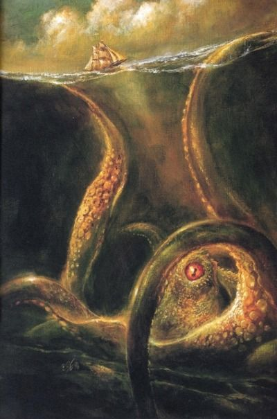
심해: 수심 2천미터 이상의 깊은 해양.
심해의 환경과 환경에 의한 생물들의 진화 특징을 서술해보았습니다.
1.환경
(1) 빛
바닷물은 빛을 흡수하기 때문에 심해층까지 빛이 도달하지 못 합니다. 그 말은 즉 심해층에서는 생태계의 주요 생산자인 식물이 살아가지 못 한다는 것이죠.
육지 생태계처럼 바다 생태계도 마찬가지로 햇빛이 잘 드는 표층에서는 식물플랑크톤이 육지식물처럼 광합성을 하여 유기물을 만들고, 이를 동물플랑크톤이 먹고, 작은 물고기가 동물플랑크톤을 잡아먹고, 큰 물고기는 작은 물고기를 잡아먹으며 생태계가 유지됩니다.
그렇다면 식물이 살 수 없는 심해는 어떨까요?
심해생물의 주요 먹이원은 표층에서 죽어 아래로 가라앉는 생물들의 사체입니다.
표층에 살던 생물이 죽으면 천천히 바다 밑으로 가라앉습니다. 그러면서 미생물에 의해서 분해되어 영양물질이 재순환되기도 하고, 사체는 작은 조각으로 부서지면서 아래로 계속 가라앉습니다.
가라앉는 생물의 사체 부스러기가 마치 하늘에서 눈이 내리는 것처럼 보인다 하여 이를 바다눈(marine snow)이라 합니다. 바다눈은 눈처럼 하얗게 보입니다. 깊은 바다 속에는 일 년 열두 달 항상 눈이 내립니다. 결국 이 유기물질이 심해 생물체의 에너지원이 되는것이죠.
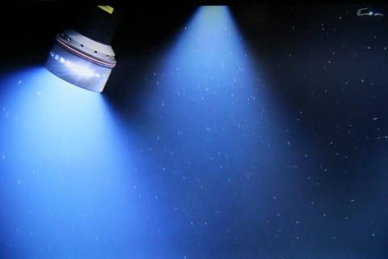
(무인잠수정으로 촬영한 바다눈)
(2)수압
깊이 10m당 약 1기압씩 증가하기때문에 심해층의 수압은 굉장히 큽니다.
(3)수온
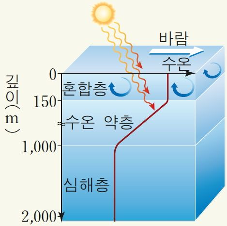
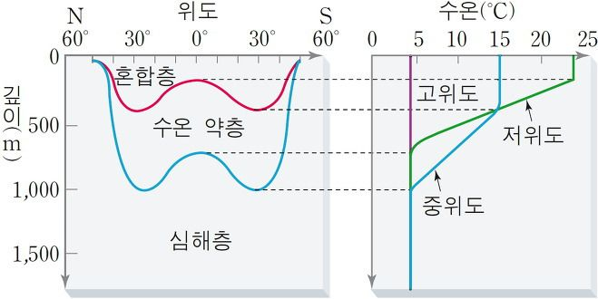
사진에서 볼 수 있는 것처럼 해수를 3개의 층으로 나눌 수 있는데 이 층을 나누는 기준은 수온의 분포입니다.(밀도로 나누기도 함)
정말 간단하게 설명해보자면
1.혼합층
태양복사에너지에 의해 직접적으로 가열되며 바람에 의해 섞이는 층입니다. 온도 변화가 거의 없고 바람의 세기가 강할수록 층의 두께가 커짐(중위도 지역이 제일 두께가 큼)
2.수온약층
수심이 깊어질수록 내려오는 태양복사에너지가 적어지고 그로 인해 온도가 내려가는 층입니다. 혼합층과 심해층 사이의 에너지와 물질의 교환을 차단합니다. 기온이 높은 곳일수록 뚜렷하게 발달합니다.(저위도)
3.심해층
주인공인 심해층입니다. 계절과 위도에 의한 수온의 영향은 거의 없고 약 4도로 일정합니다.
(4) 산소 농도
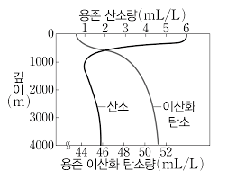
산소농도는 위에서 알아본 태양복사에너지와 대체로 비례한다고 보면 됩니다. 표층해수에서는 빛을 쬔 식물성 플랑크톤에 의해서 용존 산소량이 가장 크고 수심이 깊어질수록 줄어듭니다. 근데 유의할 점이 있다면 심해환경에서 용존 산소량이 증가한다는 것입니다. 그 이유는 심층 순환인 열염순환에 의한 것으로 산소가 풍부한 극지방의 표층해수가 침강에 의해 심해로 유입되기 때문에 용존산소량이 늘어난다고 볼 수 있습니다.
-종합하자면 심해환경은 높은 수압, 낮은 수온, 적은 먹이, 어두움, 낮은 용존 산소량을 특징으로 하며 심해생물들은 이러한 환경에서 살아남기위해 진화해왔다는 것을 알 수 있습니다.
2. 진화 전략
(1) 대형화
우선 심해의 높은 압력을 견디기 위해 대사 활동을 높이고, 저온과 적은 먹이로 성장이 느리기에 대신 수명을 키우기 위해 심해생물이 커지게 됐다는 이론이 있습니다.
이러한 대형화는 모든 심해생물에서 나타나는 것은 아니며 오징어 같은 무척추 동물에서 나타나는 특징입니다.
(대표적인 생물인 대왕오징어)
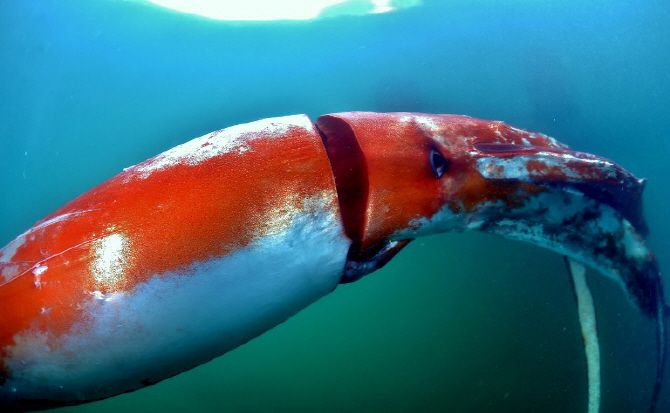
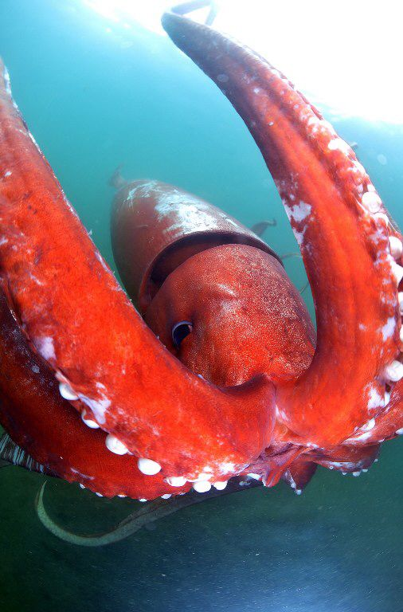
(2) 발광
빛이 없는 심해환경이다보니 발광기관이 발달하는 방향으로 진화가 이뤄지기도 합니다.
심해 속 동물들은 대부분 자웅동체입니다. 넓디넓은 바닷속에서 자기 짝을 찾아 종족 번식을 할 확률은 계산이 안 될 정도로 작습니다. 이 때문에 대부분 자웅동체로 진화됐을 가능성이 큽니다.
그렇지 않은 경우, 이를 대신해 발달한 것이 발광기관입니다. 캄캄한 바닷속에서 나와 같은 종족을 찾기 위해 무엇보다 크게 자극이 될만한 것은 빛입니다. 이러한 발광 기관은 짝을 찾는데도, 먹이를 유인하거나 또는 포식자보다 더 큰 포식자를 유인하여 자신을 방어하는 수단으로 이용되기도 합니다.
대표생물들
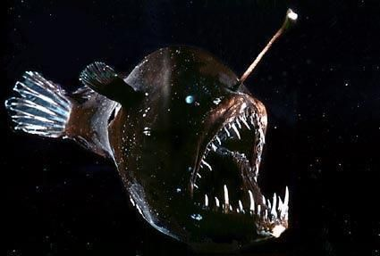
(심해아귀)
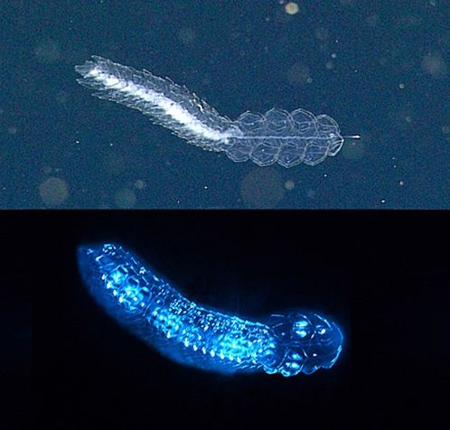
(관해파리)

(통안어)
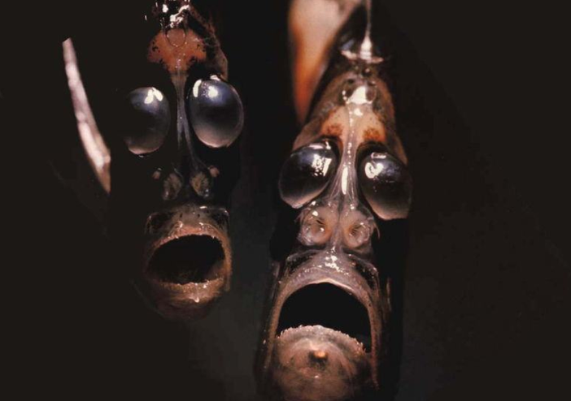
(납작앨퉁이)
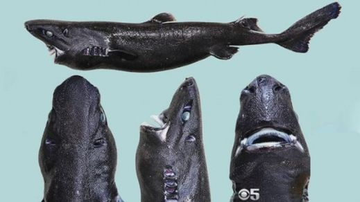
(닌자 랜턴 상어)
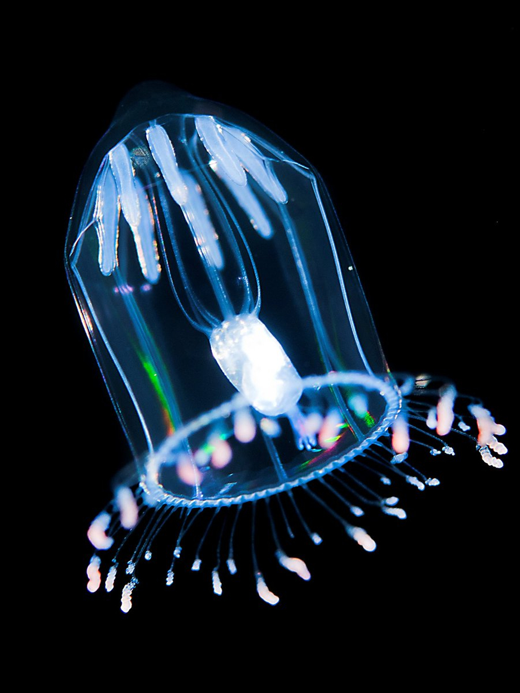
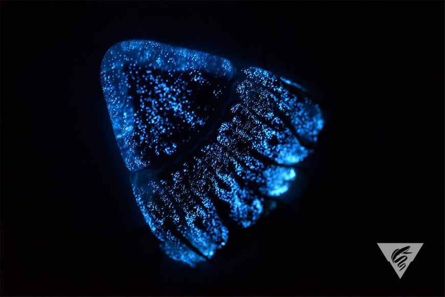
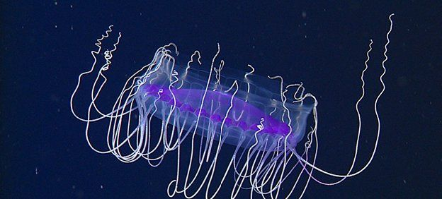
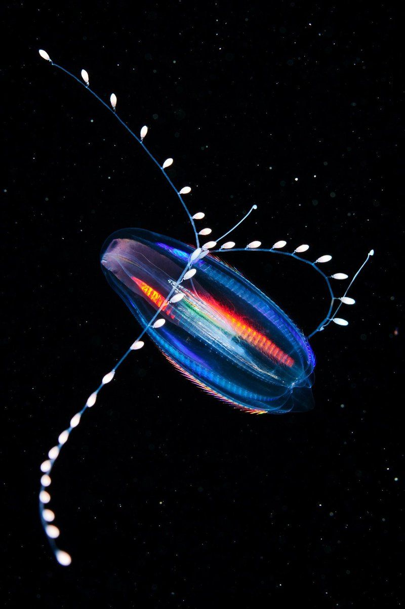
(각종 해파리들. 이름 다 까먹음 ㅎㅎㅋㅋㅈㅅ!)
(3) 근육조직 퇴화
같은 면적당 동물의 밀집도가 극히 낮은 심해에서 먹이 대부분은 마린 스노우라 불리는 큰 생선들의 부식잔해물입니다. 고래와 같은 큰 물고기가 죽고 나면 부패하여 심해로 떨어지는 눈과 같은 잔해물을 청소하듯 먹고 삽니다. 넓은 심해에서 살아 있는 생물을 헤엄쳐 잡아먹기에는 어려움이 많습니다.
그래서 에너지원이 될 먹이를 어쩌다 먹게 되는 생물이 살아남기 위해서는 에너지 사용을 최소화해야 하고, 이를 위해 택한 방법이 에너지를 소비하는 근육을 점점 퇴화시키는 것입니다. 그래서 많은 심해 동물은 젤라틴 소재와 같이 특수한 재질로 되어 있으며, 이는 밀도가 물보다 낮아 물에서 쉽게 이동할 수 있다고 합니다.
대표생물
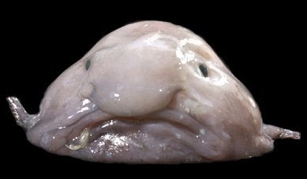
방시혁
3. 심해를 배경으로 한 게임.
심해 환경 특성상 생존게임과 공포게임이 많습니다. 전부 쓰려니 귀찮아서 종류와 이미지만 씁니다.
(1)서브노티카
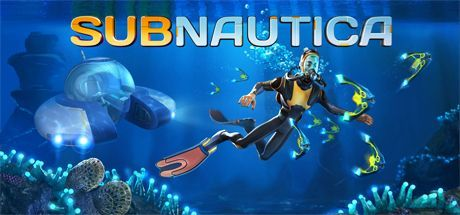
너무 유명해서 설명은 하지 않는다.
(2)어비스리움
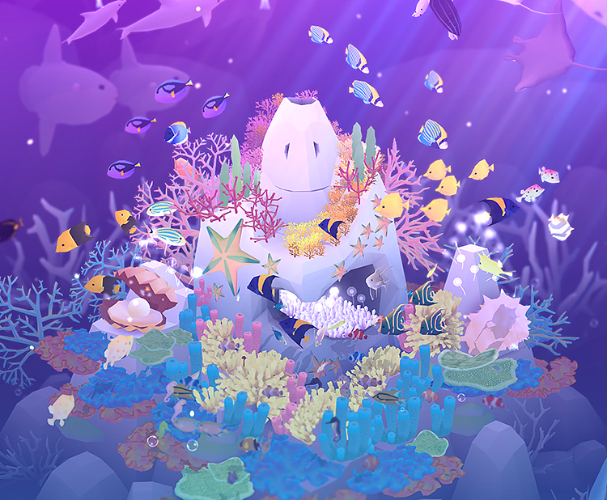
너무 귀여워서 설명은 하지 않는다.
(3)SOMA
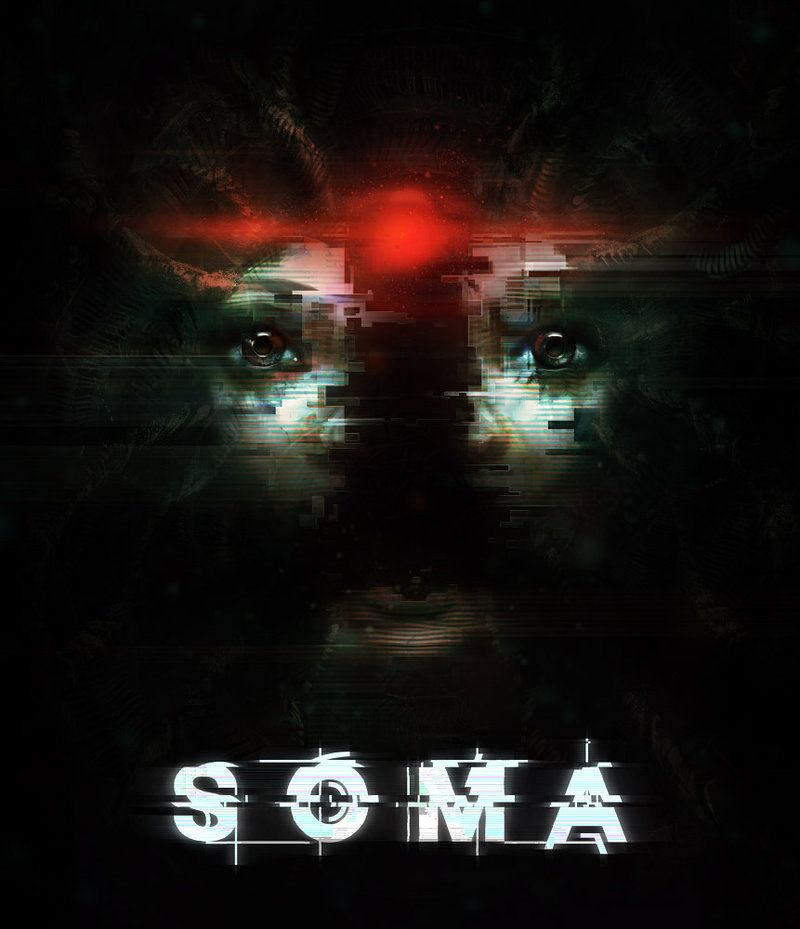
너무 무서워서 설명은 하지 않는다.
(4)바이오 쇼크 1,2
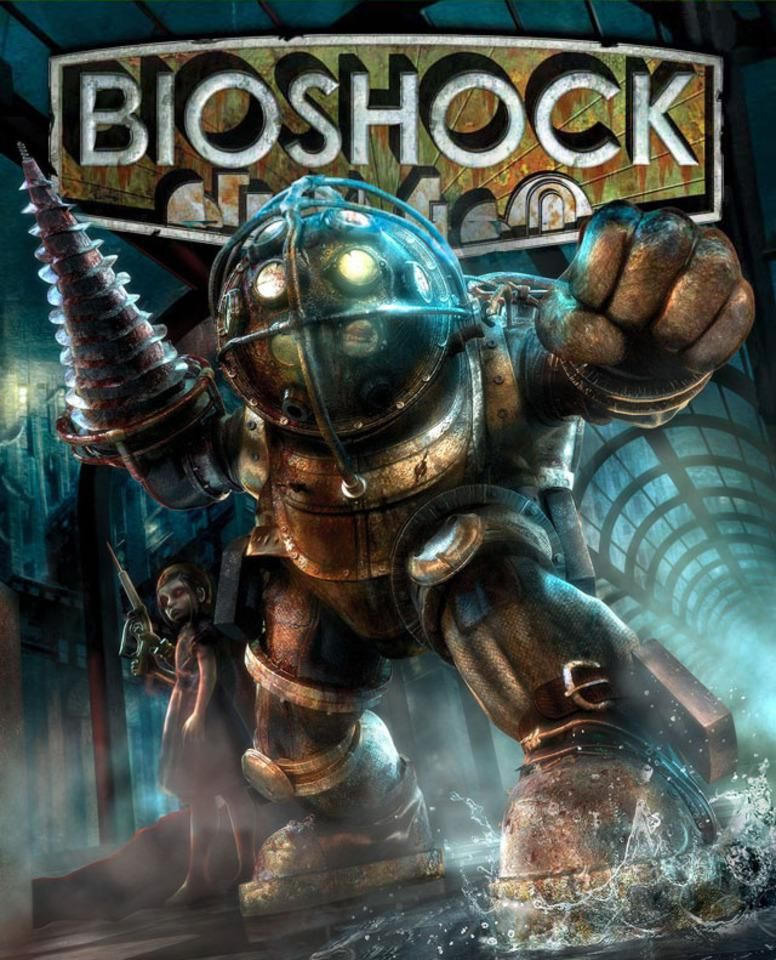
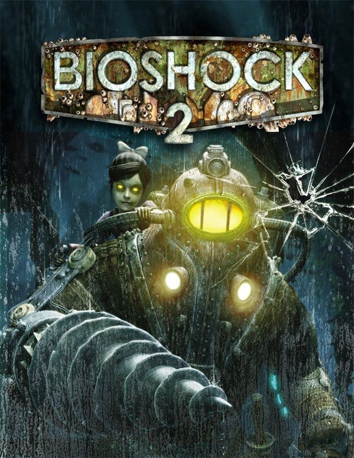
너무 갓겜이라 설명은 하지 않는다.
후원댓글 14개
댓글 14개 ▼